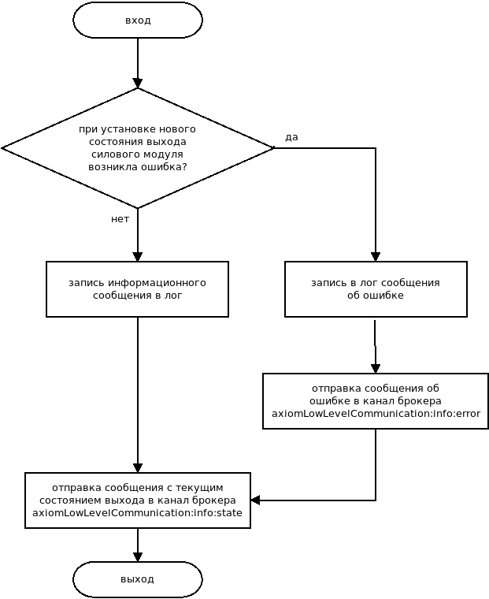
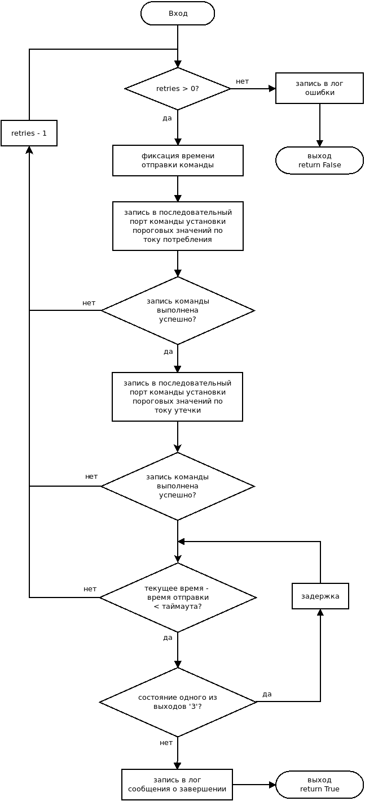
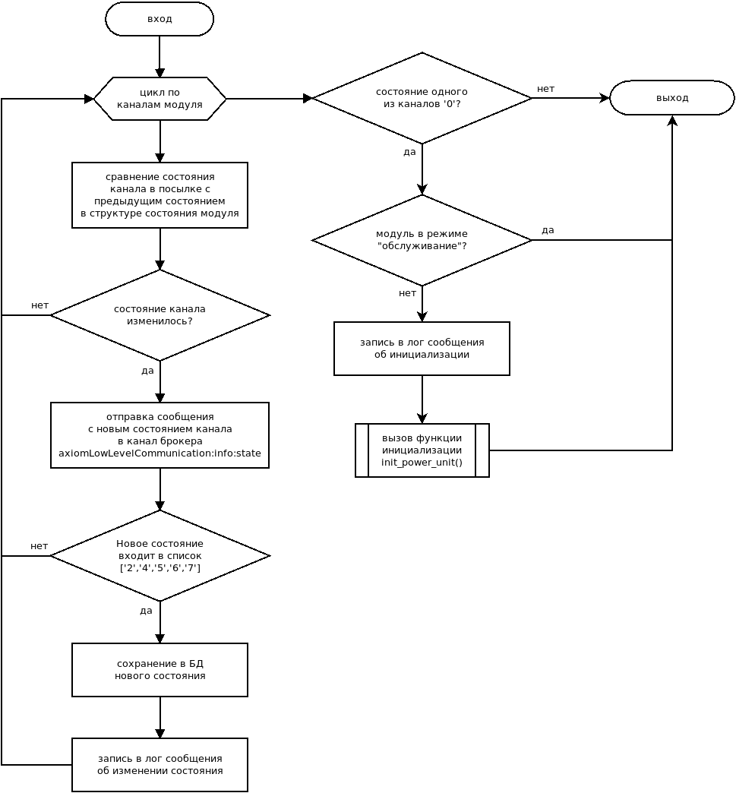
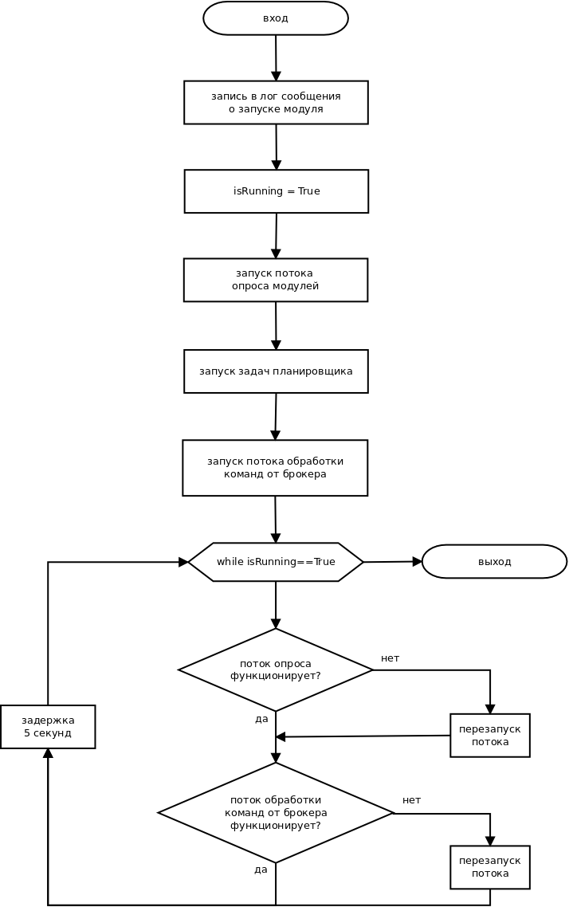
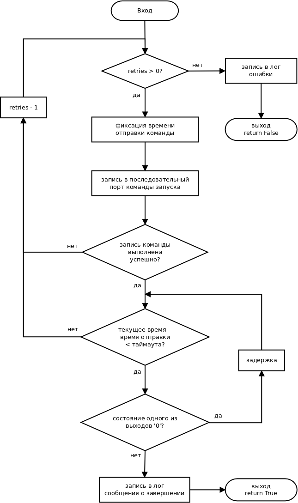

Модуль highLowTransceiver¶
-
class
axiomLowLevelCommunication.highLowTransceiver.HighLowTransceiver[исходный код]¶ -
__init__()[исходный код]¶ Инициализирует экземпляр класса
- Переменные
settings – конфигурация аппаратных модулей системы
redis – объект подключения к БД Redis
isRunning – флаг работы/остановки
power_unit_addrs – список адресов силовых модулей
input_unit_addrs – список адресов модулей ввода
unit_addrs_to_transceivers_map – таблица соответствия адресов модулей объектам
SerialTransceiver, подключенным к COM портам, соответствующего модуляpower_units_state_dicts – структура состояния силовых модулей
input_units_state_dicts – структура состояния модулей ввода
power_units_maintenance – флаги силовых модулей обслуживание/штатная работа
humanreadable_states – таблица соответствия цифровых кодов состояний силовых модулей и их словесного описания
humanreadable_signals – таблица соответствия цифровых кодов сигналов силовых модулей и их словесного описания
ch_locks – словарь с объектами блокировки управления каналами силовых модулей
scheduler – планировщик задач
Crc8Table – таблица для рассчета контрольных сумм CRC8 табличным способом
pu_regex – шаблон регулярного выражения для парсинга посылок от силовых модулей
iu_regex – шаблон регулярного выражения для парсинга посылок от модулей ввода
P_passive – мощность потребляемая системой без учета подключенных к ней потребителей
-
before_return_from_set_ch_state(log_msg, channel_addr, current_state, redis_error_msg=None)[исходный код]¶ Вызывается перед выходом из фунции
set_ch_state()Выполняет следущие действия:
Публикует на брокер текущее состояние силового выхода;
Записывает в лог результат выполнения команды;
Публикует на брокер сообщение об ошибке, если она есть;
- Параметры
log_msg (str) – сообщение для записи в лог
channel_addr (str) – адрес канала силового модуля
current_state (str) – текущее состояние канала силового модуля („0“…„7“)
redis_error_msg (str) – сообщение об ошибке для публикации на брокер (по умолчанию None)

-
calc_crc8(buff, crc)[исходный код]¶ Рассчитывает контрольную сумму по алгоритму CRC8
- Параметры
buff (numpy.ndarray) – массив с байтами числа
crc (int) – инициализирующее значение
- Тип результата
numpy.int64
- Результат
рассчитанная контрольная сумма
-
calc_passive_consumption()[исходный код]¶ Расчет пассивной потребляемой мощности схемы в режиме ожидания
- Deprecated
- Результат
пассивная потребляемая мощность
-
calc_system_own_power(input_unit_addr)[исходный код]¶ Рассчитывает собственную (без учета потребителей) мощность расходуемую платой, на которой установлен модуль ввода
Расчет производится по формуле \(P = U_{in} \cdot I_{in} + U_{in} \cdot I_{out} + U_{in} \cdot I_{ypr}\), где
\(U_{in}\) - действующее значение напряжение сети [В];
\(I_{in}\) - значение тока, потребляемого внутренними модулями модуля ввода [A];
\(I_{out}\) - значение тока, потребляемого внешними модулями [A];
\(I_{ypr}\) - значение тока, потребляемого автоматом управления [A].
- Параметры
input_unit_addr (str) – адрес модуля ввода
- Тип результата
float
- Результат
рассчитанная мощность [Вт]
-
check_power_unit_counter(counter, unit_addr, type_cmd)[исходный код]¶ Контролирует корректность счетчика в посылке от ПО силового модуля
- Параметры
counter (str) – значение счетчика
unit_addr (str) – адрес силового модуля, от которого пришла посылка
type_cmd (str) – тип посылки
-
configure_power_unit(unit_addr, retries=3)[исходный код]¶ Конфигурирует ПО силового модуля:
Отправляет на силовой модуль команды конфигурации:
установка порогов по току потребления :
adc hgrp <Imax1> <Imax2> <crc8-1> <crc8-2> <unit_addr>;установка порогов по току утечки:
adc hlgrp <Imax1> <Imax2> <crc8-1> <crc8-2> <unit_addr>.
Контролирует исполнение команд. Команды считается выполненными успешно, если ни один из каналов не остался в состоянии „3“ (nuse)
- Параметры
unit_addr (str) – адрес силового модуля
retries (int) – количество возможных повторых попыток
- Тип результата
bool
- Результат
True - успешное исполнение команды), False - неуспешное

-
handle_reply(reply)[исходный код]¶ Обрабатывает ответы по ПО низкого уровня
Отправляет ответы на запросы измерения сопротивления изоляции в канал Redis
axiomLowLevelCommunication:response:insulationв формате<адрес выхода силового модуля> <измеренное значение>. Записывает измеренное значение в структуру состояния силовых модулейpower_units_state_dicts- Параметры
reply (str) – посылка типа «rply» от ПО низкого уровня
-
init_power_unit(unit_addr)[исходный код]¶ Инициализирует силовой модуль
Отправляет на силовой модуль команды запуска и установки порогов и проверяет их исполнение. После запуска и установки порогов включает выходы, которые были включены до перезагрузки модуля
- Параметры
unit_addr (str) – адрес силового модуля
- Тип результата
bool
- Результат
True - инициализация прошла успешно, False - возникли ошибки
-
load_settings()[исходный код]¶ Загружает настройки ПО из файла с настройками
- Тип результата
dict
- Результат
словарь с настройками
-
measure_insulation_resistance(channel_addr)[исходный код]¶ Выполняет команду измерения сопротивления изоляции канала силового модуля
Переводит силовой модуль в состояния «обслуживание». Отправляет на низкий уровень команду сброса:
rst <unit_addr>. Отравляет на низкий уровень команду на измерение сопротивления изоляции:resist start 1|2 <unit_addr>. Контролирует выполнение команды- Параметры
channel_addr (str) – адрес канала силового модуля
-
on_new_state_parcel(parcel)[исходный код]¶ Обрабатывает новые посылки типа «st» от силовых модулей
Если состояние какого-либо из каналов силового модуля изменилось то:
новое состояние публикуется в канал
axiomLowLevelCommunication:info:stateесли канал перешел в одно из состояний („2“, „4“, „5“, „6“, „7“), то новое состояние сохраняется в Redis
сообщение о переходе канала в новое состояние пишется в лог
- Параметры
parcel (dict) – разобранная посылка от низкого уровня
Если состояние одного из каналов „0“ и модуль не находится в режиме «обслуживание», выполняется инициализация модуля

-
publish_current_characteristics()[исходный код]¶ Публикует на брокер текущие значения энергетических характеристик аппаратных модулей
Запускается как задача планировщика
scheduler. Выполняется каждые 10 секунд. Отправляет следующие характеристики:Напряжение электросети на модулях ввода;
Частота электросети на модулях ввода;
Активная потребляемая мощность в каналах силовых модулей;
Реактивная потребляемая мощность в каналах силовых модулей;
Ток, потребляемый в каналах силовых модулей;
Температура каналов силовых модулей.
Канал Redis для отправки сообщений:
axiomLowLevelCommunication:info:metrics_data.
-
reader_target()[исходный код]¶ Осуществляет прием данных от низкоуровневого ПО
Для каждого силового и вводного модуля запускает в отдельном потоке функцию
update_power_unit_state()илиupdate_input_unit_state()соответственно и контролирует работу запущенных потоков
-
run()[исходный код]¶ Запускает основной цикл работы функционального модуля.
Запускает в потоке метод опроса аппаратных модулей
reader_target();Запускает выполнение задач планировщика
scheduler;Запускает в потоке метод обработки команд от модуля «Логика»
writer_target().
Контролирует рабочее состояние потоков опроса и обработки команд

-
run_power_unit(unit_addr, retries=3)[исходный код]¶ Запускает ПО силового модуля
Отправляет на модуль команду запуска
run start <unit_addr>. Контролирует исполнение команды. Команда считается выполненной успешно, если ни один из каналов не остался в состоянии „0“ (idle)- Параметры
unit_addr (str) – адрес силового модуля
retries (int) – количество возможных повторых попыток
- Тип результата
bool
- Результат
True - успешное исполнение команды), False - неуспешное

-
set_ch_state(channel_addr, new_state_dict)[исходный код]¶ Выполняет команду установки нового состояния выхода силового модуля
Отправляет на низкий уровень команду
ch 1|2 on|off <unit_addr>. Контролирует исполнение команды. Перед выходом вызывает методbefore_return_from_set_ch_state().- Параметры
channel_addr (str) – адрес канала силового модуля
new_state_dict (dict) – состояние канала силового модуля, которое нужно установить. Формат:
{'status': '4'|'5'}
- Тип результата
bool
- Результат
True - команда выполнена, False - возникли ошибки
-
sigterm_handler(signum, frame)[исходный код]¶ Корректно останавливает программу при получении сигнала SIGTERM, SIGINT
- Параметры
signum – signal number (не используется)
frame – current stack frame (не используется)
-
split_to_bytes(number, num_byte)[исходный код]¶ Представляет число в виде массива байтов, из которых оно состоит :type number: numpy.uint8 :param number: исходное число :type num_byte: int :param num_byte: количество байт занимаемых числом :rtype: numpy.ndarray :return: массив с байтами числа
-
update_input_unit_state(unit_addr)[исходный код]¶ Обрабатывает посылки от ПО модулей ввода
для посылок типа «rply» вызывается функция
handle_reply()для посылок тика «st», «volt», «cur» обновляются соответстующие поля структуры
input_units_state_dicts;для всех посылок вызываетс функция
check_input_unit_counter().
- Параметры
unit_addr (str) – адрес модуля ввода
-
update_power_unit_state(unit_addr)[исходный код]¶ Обрабатывает посылки от ПО силовых модулей
для посылок типа «rply» вызывается функция
handle_reply()для посылок типа «st» вызывается функция
on_new_state_parcel();для посылок тика «st», «adc», «ld», «tmpr» обновляются соответстующие поля структуры
power_units_state_dicts;для всех посылок вызываетс функция
check_power_unit_counter().
- Параметры
unit_addr (str) – адрес силового модуля
-
writer_target()[исходный код]¶ Обрабатывает команды от функционального модуля «Логика»
При получении команды вызывает соответствующий метод для ее обработки. Поддерживаемые команды:
- Установка нового состояния выхода силового модуля:
канал Redis:
axiomLogic:cmd:state;формат команды:
{'addr': <channel_addr>, 'state': {'status': '4'|'5'}};метод для обработки:
set_ch_state().
- Измерение сопротивления изоляции канала силового модуля:
канал Redis:
axiomLogic:request:insulation;формат команды:
<channel_addr>;метод для обработки:
measure_insulation_resistance().
-
{kind=link}
{kind=link}
{kind=link}
{kind=link}
{kind=link}
{kind=link}
{kind=link}
{kind=link}